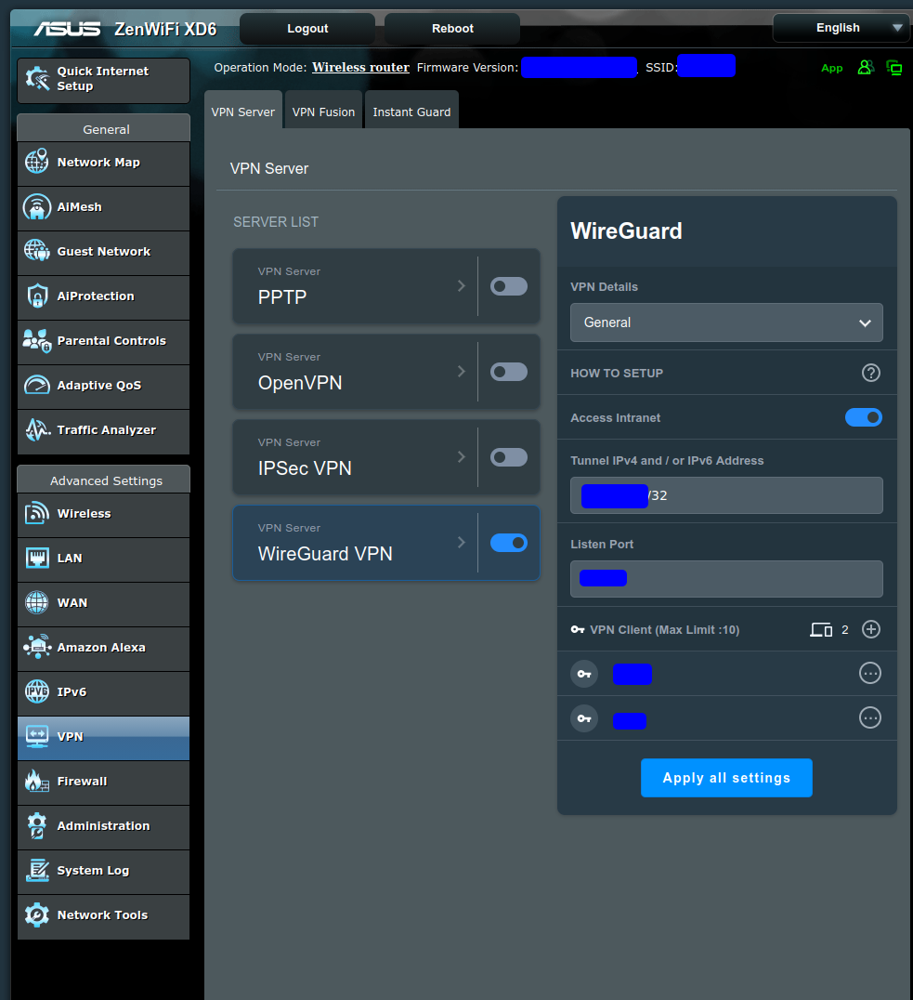
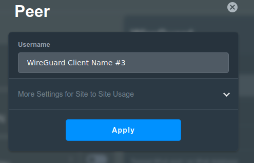
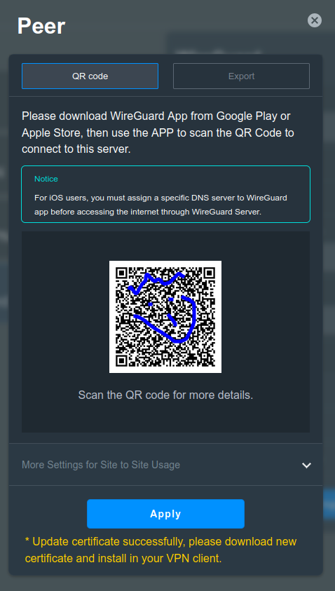
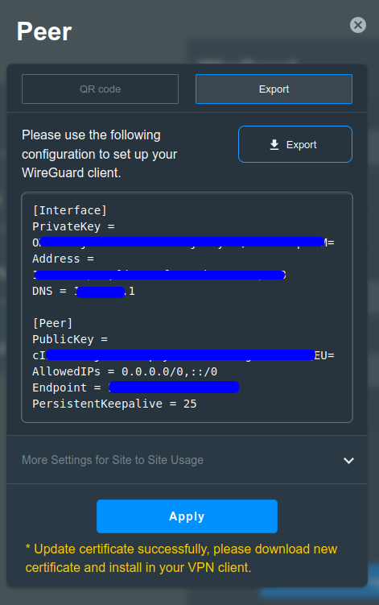

Remote, Remote,Remote !
I need to be able to access my lab from outside my local network.
I’m essentially working on a laptop and have a small home lab on a desktop machine.
I wanted also to be able to access my “smart home” system remotely when I’m out for long time.
For that purpose, I have setup remote access using Wireguard. And the good thing is that my home router has the capability to do set up a Wireguard server.
Here is the journey of setting up this remote access to my local network.
First configure Wireguard on my router
1 – Configure Wireguard on my router
Thanks to the design of Wireguard the setup was quite easy on my router.
I had essentially to enable the Wireguard VPN in the UI.

Then click on the + button to add ad a VPN client, the Peer popup shows and I just have to click on the apply button.

After that on my phone after downloading the wigurad client app,
I can scan the QR code to add the connection.

Or export the configuration file to use import it either on my phone Wireguard client or in a Wireguard client on my laptop.

2 – Configure DNS update on my rpi
Because I’m using a home internet connection, my public IP address is rotating regularly.
To avoid having to reconfigure my vpn client every time my IP has changed, I have resurected and rewritten in rust on old tool I have been using to update a DNS hostname with the latest Public IP.
>> dnsupdate rust tool.
Essentially this small tool is reaching retreiving my public IP address
Updating my a dns fqdn to my dnsprovider
Then I use this dns hostname as my target for my Wireguard.
As usual the tool is available on github : https://github.com/Vagrantin/dnsupdate
Configure the RPI to run the tool
First I had to cross-compile my tool for Raspberry as it is running on ARM.
1. Install the Rust ARM Target
Add the ARM target for Rust:
rustup target add arm-unknown-linux-gnueabihf
2. Install the ARM Toolchain
Install the GNU ARM toolchain for cross-compilation:
sudo apt update
sudo apt install gcc-arm-linux-gnueabihf
3. Configure Cargo for Cross-Compilation
Create or edit `~/.cargo/config.toml` to specify the linker for the ARM target:
```
[target.arm-unknown-linux-gnueabihf]
linker = "arm-linux-gnueabihf-gcc"
```
4. Cross-Compile Your Program
Run the following command to build your program for ARM:
```
cargo build --release --target=arm-unknown-linux-gnueabihf
```
5. Locate the Compiled Binary
The compiled binary will be in:
```
target/arm-unknown-linux-gnueabihf/release/your_program_name
```
6. Copy the Binary to Your Raspberry Pi
Use `scp` to transfer the binary to your Raspberry Pi:
```
scp target/arm-unknown-linux-gnueabihf/release/your_program_name pi@your_raspberry_pi_ip:/home/pi/
```
7. Copy the Binary to Your Raspberry Pi
Then I copied the binary and the configuration file in the “/opt/pibox” folder
I then update the configuration file with my API key, dns provider endpoint and the hostname that I want to keep up to date
8. Finally I create a Systemd timer to run this small tool every 10mins
Fill in the file “/etc/systemd/system/dnsupdate.timer” with this content, it will wait 5mins after boot to trigger the first update and then run the program every 10mins
```
[Unit]
Description= Trigger dnsupdate every 10 minutes
[Timer]
OnBootSec=5min
OnUnitActiveSec=10min
Persistent=true
[Install]
WantedBy=timers.target
```
You also need to create the related service for Systemd,
Fill in the file “/etc/systemd/system/dnsupdate.service
```
[Unit]
Description=Update public ip address to my fqdn
[Service]
Type=oneshot
ExecStart=/opt/pibox/dnsupdate /opt/pibox/myconfig.toml
```
You then have to reload systemd to load this new service and related timer and then restart the timer related to the tool.
```
sudo systemctl daemon-reload
sudo systemctl restart myapp.timer
```
You can then check what is the status of your timer with this command, and you can seen when was the last time it has been triggered
```
systemctl list-timers | grep dnsupdate
Wed 2026-02-04 19:04:19 JST 4min 7s […] 5min ago dnsupdate.timer dnsupdate.service
```
Sytemctl dnsupdate.service and triggered by dnsupdate.timer
And you are done, you can now access your LAN from outside and continue to tinker even if you’re not at home ! Unlimited DIY !
Hope you enjoyed it, see you next time !